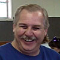

SJAA
Ephemeris
|
SJAA Ephemeris |
Editor's Notes |
This will be my last issue as editor of the Ephemeris, a job I've held for about two years now.
I assure you, this will not be a downgrade for the publication. I'm being replaced by the tag team of Jane Houston and Morris (Mojo) Jones, and we can all expect a much better Ephemeris as a result.
Besides, I'll still be around doing the Mooning column (oh darn, that thang?) and condensing George Zay's meteor notes for the club -- plus maybe an article here and there, a luxury I didn't allow myself as editor unless nobody else covered something important).
I'll also be on board as something of a "publisher" (handling the printing and mailing list generation, and running the product to your able circulation department, Lew Kurtz and Bob Brauer. Old editors never stop, we just move down the food chain...)
It's been an amazing couple of years, an experience I'll never forget.
You get to meet and work with some great people doing this job ...particularly Don Machholtz and Richard Stanton (with their regular columns) and other retired editors (such as the tireless John Gleason).
But enough about the old. It's time to ring in the new year, and the new editors, from whom we can all expect nothing but the best.
This is, of course, my last opportunity to stand on the soap box, a practice I think I've generally avoided. But hey, one last shot....
When I started this job, the club was in something of a crisis, and several board members resigned. Since that time things have stabilized somewhat, and we've helped rebuild the observatory at Fremont Peak, a contribution we can all take pride in. So things are okay, but this could be a much better club.
It was built by people who are now legends in the amateur community, and we have quite a history to live up to. Perhaps we can.
Overall, it's an exciting time, and I hope to see more folks getting involved and taking up the banner.
The most shocking thing to happen recently was the sudden death of Alan Nelms. 
We could dwell on his accomplishments as an observer (he was motivated, diligent and highly skilled) and how that is a loss to the community. We could dwell on his excellent equipment, and how we'll miss the views he offered so freely.
But that was not the important thing about Alan.
Foremost, he was a good and gentle person whose presence, conversation, jokes and smile added a glow to any place he happened to be, observing or not. Mix in unflagging enthusiasm for the night sky, and you have the recipe for the ideal amateur astronomer, expressed as a human being.
Nothing could be more important.
Alan's funeral was standing room only, and Rashad made a stirring speech that spoke eloquently for all astronomers everywhere -- helping give Alan the sendoff he deserves.
Alan may be gone, but the memory of his light remains with all of us in the darkness we so love.
The new year brings a new round of "Beginning" Astronomy classes, and this year we have a new instructor: Doug Davis, who has run similar programs for years down south and we're quite fortunate to have him as an active new member. He'll be replacing Jack Zeiders, who did such an excellent job for the last two years; a tough act to follow, but Doug is up to it.
Though it's referred to as a "Beginning" class, usually there are things for everyone to learn, so don't feel like you have to stay away because you know it all...
Welcome, Doug, and thanks!
Kevin Medlock tells me the new steel roof blew off the observatory at Fremont Peak during high December winds. It's not yet known what caused the failure so soon (the attachment screws are suspected), but it will be replaced posthaste.
Weather has been something of a curse again this year, but we're used to that. With resolve and an eye to the future, we'll do just fine.
| Dave North; last updated: 1998 Dec 15 | Prev Next |